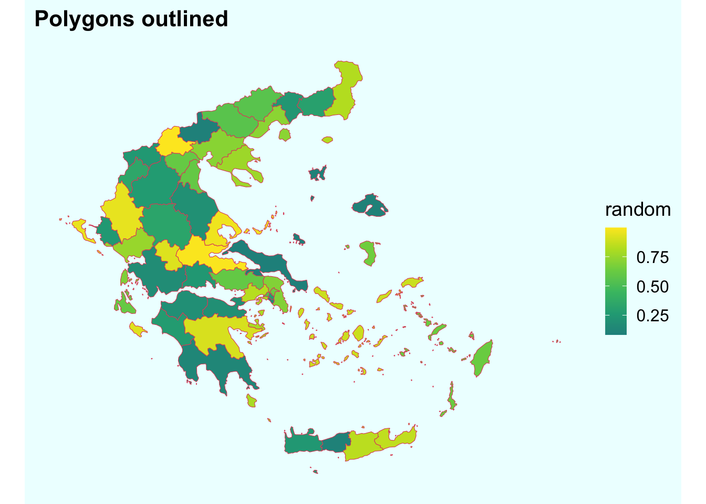
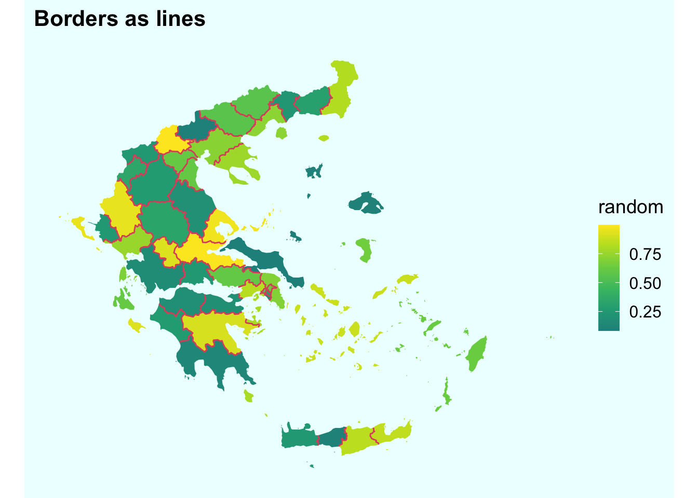

![]()
{kind=link}
{kind=link}
library(tidyverse)
library(sf)
library(cowplot)
set.seed(911)
# subset Greence, NUTS-3 regions
library(eurostat)
greece <- eurostat_geodata_60_2016 %>%
filter(LEVL_CODE==3,
str_sub(geo, 1, 2) == "EL") %>%
# create random values for filling the polygons
mutate(random = runif(length(id))) %>%
select(id, geometry, random) %>%
st_transform(crs = 3035)Since R community developed brilliant tools to deal with spatial data, producing maps is no longer the privilege of a narrow group of people with very specific almost esoteric knowledge, skillset, and often super expensive software. With #rspatial packages, maps (at least the relatively simple ones) became just another type of dataviz.
Just a few lines of code can reveal the eye-catching and visually pleasant spatial dimension of the data. Similarly, a few more lines of code can radically improve the pleasantness of a simple map – just add borders as lines in a separate spatial layer.
An often “quick and dirty” solution when composing a simple choropleth map is to use polygons outline as the borders. While this works okay to distinguish the polygons, the map quickly becomes unnecessarily overloaded. All the non-bordering outlines – complicated coastal lines and islands’ outlines – look ugly and add nothing to the map.
Let’s illustrate the ease of this trick mapping Greece with its numerous small islands. We’ll use the beautiful eurostat package that has a built in spatial dataset with NUTS-3 regions of Europe.
First, here’s the typical lazy (or rather no-brainer) way of using the polygons’ outlines to show the borders between our spatial units.
# plot with polygon outlines
greece %>%
ggplot()+
geom_sf(aes(fill = random), color = 2, size = 1)+
labs(title = "Polygons outlined")+
scale_fill_viridis_c(begin = .5)+
theme_map()+
theme(plot.background = element_rect(color = NA, fill = "#eeffff"))
gg_outline <- last_plot()Look at all the islands, especially the small ones – what are all these red outlines for? Insted, we can add only the borders between the polygons as lines. For this we need to add another geospatial layer with lines. Where do we get it? This is extremely easy to produce thanks to the marvelous little package rmapshaper that has a function ms_innerlines() exactly for the task. 1
1 Before I found rmapshaper the task seemed overly complicated, I even asked Stack Overflow
# produce border lines with rmapshaper::ms_innerlines()
library(rmapshaper)
bord <- greece %>% ms_innerlines()Now, let’s plot the same map with proper borders between the polygons. Note that for the sf layer with polygons I set color = NA to get rid of the polygons outline. Then with the next call to geom_sf() I draw the line borders as a separate layer.
# now plot without polygon outlines and with borders as lines
greece %>%
ggplot()+
geom_sf(aes(fill = random), color = NA)+
geom_sf(data = bord, color = 2, size = 1)+
labs(title = "Borders as lines")+
scale_fill_viridis_c(begin = .5)+
theme_map()+
theme(plot.background = element_rect(color = NA, fill = "#eeffff"))
gg_bord <- last_plot()That’s it! This is the simplest dataviz trick I know that can radically improve the outlook of simple choropleth maps. It’s only one additional line of code. You can even create the borders sf object on the fly within the ggplot map creation code specifying the data parameter as . %>% ms_innerlines(), like this:
geom_sf(data = . %>% ms_innerlines(), color = 2, size = 1)Finally, let’s put the two maps side by side.
# put side by side
library(patchwork)
(
gg_outline + gg_bord
) +
plot_layout(guides = "collect")+
plot_annotation(
caption = "! Look at the islands",
theme = theme(plot.background = element_rect(color = NA, fill = "#eeffff"))
)
Replicate this analysis using the
R code from this gist. This post is partially based on my previous Twitter thread
About this post
Publishing this post is my personal gestalt closure – it spent more than three years in planning and then in drafts. Somehow, with this post I hit the wall of writer’s block and it coincided with Twitter threads substituting blogging for me. Now, it’s time to get back to blogging.